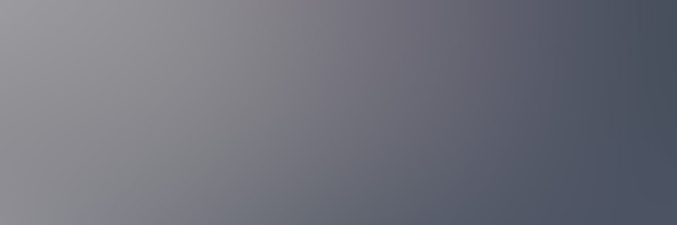

Intro

I am an analytical and highly motivated final-year BSc Applied Sciences undergraduate focusing on Mathematics, Statistics, and Chemistry. I possess a strong quantitative foundation with hands-on research experience in time series forecasting, network analysis, and machine learning.
Proficient in statistical programming (R, Python, MATLAB), I am passionate about translating complex mathematical models into real-world solutions. As a dedicated educator and researcher with a proven track record of community leadership, I am eager to contribute to impactful academic research and advanced statistical studies.
Experience & Projects

Research & Academic Projects
Final Year Statistics Research Project
Modeling and Forecasting Rainfall Patterns using Nonlinear Autoregressive (NAR), Nonlinear Autoregressive Exogenous (NARX), and Autoregressive Integrated Moving Average (ARIMA) Models with Logarithmic Transformation, Handling Non-linear Data and Hydrological Forecasting with Climate Data Analysis.
Undergraduate Mathematics Research Project
Evaluating the Impact of Synthetic Bridge Nodes on the Structural Recovery of Social Networks using Graph Theory, Network Resilience Simulation, and Social Media Analytics.
Statistics Group Project
Automated Disease Detection System for Common Sri Lankan Crops Using Deep Learning and Convolutional Neural Networks (CNN) with Image Classification and Pattern Recognition.
Work Experience
Volunteer Mathematics Teacher
Sasnaka Sansada (Ganitha Saviya Program) | Sep 2022 - Present
Mentored over 1,000 G.C.E. (O/L) students across 35+ government schools through targeted problem-solving sessions, contributing to a 10% average increase in school-wide mathematics pass rates.
Career Guidance Mentor
Sasnaka Sansada & USAID | 2022
Provided strategic career and academic guidance to over 1,000 students, assisting them in identifying and planning appropriate future career pathways.
Education & Skills

Education
B.Sc. in Applied Sciences (2020-2026)
Rajarata University of Sri Lanka | Faculty of Applied Sciences
Specializing in Mathematics, Statistics, and Chemistry.
G.C.E. Advanced Level (2020)
Pannipitiya Dharmapala Vidyalaya | Physical Sciences Stream
Technical Tools & Skills
- Programming: R Studio, Python, MATLAB
- Core Competencies: Data Analysis, Machine Learning, Time Series Forecasting, Mathematical Modeling
- Soft Skills: Critical Thinking, Leadership, Adaptability, Teamwork
Leadership & Extracurriculars
- Student Executive Committee Member - Students Union, FAS, RUSL (2023-2026)
- Chief Coordinator & CEO - FAS Explorer 2025 Exhibition
- Active Volunteer - Sasnaka Sansada Foundation (2022-Present)
- Member - IMSA, NextGen Chemists, and IEEE Student Branch
Contact
Email: ulindu2001dvp@gmail.com
Phone: +94 725422572
Address: 13/2, Batawala, Padukka, Sri Lanka